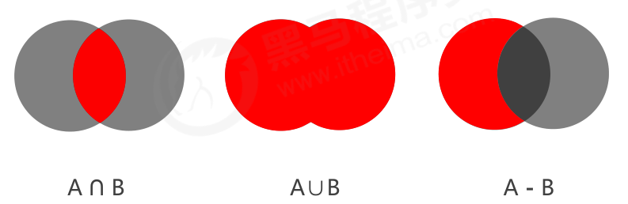
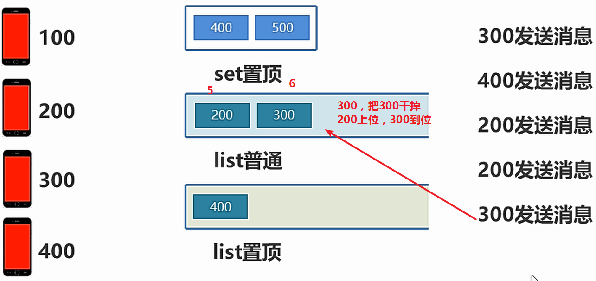

rides的学习与使用
1.Redis 简介
1-1.问题现象
- 海量用户
- 高并发
1-2.罪魁祸首——关系型数据库
- 性能瓶颈：磁盘IO性能低下
- 扩展瓶颈：数据关系复杂，扩展性差，不便于大规模集群
1-3.解决思路
- 降低磁盘IO次数，越低越好—— 内存存储
- 去除数据间关系，越简单越好—— 不存储关系，仅存储数据
1-4.Nosql
NoSQL：即 Not-Only SQL（ 泛指非关系型的数据库），作为关系型数据库的补充。
作用：应对基于海量用户和海量数据前提下的数据处理问题。
特征：
- 可扩容，可伸缩
- 大数据量下高性能
- 灵活的数据模型
- 高可用
常见 Nosql 数据库：
- Redis
- memcache
- HBase
- MongoDB
1-5.Redis
概念：Redis (REmote DIctionary Server) 是用 C 语言开发的一个开源的高性能键值对（key-value）数据库。
特征：
- 数据间没有必然的关联关系
- 内部采用单线程机制进行工作
- 高性能。官方提供测试数据，50个并发执行100000 个请求,读的速度是110000 次/s,写的速度是81000次/s。
- 多数据类型支持
- 字符串类型 string
- 列表类型 list
- 散列类型 hash
- 集合类型 set
- 有序集合类型 sorted_set
- 持久化支持。可以进行数据灾难恢复
Redis 的应用：
- 为热点数据加速查询（主要场景），如热点商品、热点新闻、热点资讯、推广类等高访问量信息等
- 任务队列，如秒杀、抢购、购票排队等
- 即时信息查询，如各位排行榜、各类网站访问统计、公交到站信息、在线人数信息（聊天室、网站）、设备信号等
- 时效性信息控制，如验证码控制、投票控制等
- 分布式数据共享，如分布式集群架构中的 session 分离
- 消息队列
- 分布式锁
1-6.Redis 的下载
Redis 入门使用，以 3.2 版本作为主版本：
下载地址：https://github.com/MSOpenTech/redis/tags
1-7.核心文件
- redis-server.exe 服务器启动命令
- redis-cli.exe 命令行客户端
- redis.windows.conf redis核心配置文件
- redis-benchmark.exe 性能测试工具
- redis-check-aof.exe AOF文件修复工具
- redis-check-dump.exe RDB文件检查工具（快照持久化文件）
1-8.基本操作
- 信息添加，设置 key，value 数据
1 | set key value |
- 信息查询，根据 key 查询对应的 value，如果不存在，返回空（nil）
1 | get key |
- 清除屏幕信息
1 | clear |
- 退出客户端命令行模式
1 | quit |
- 帮助，获取命令帮助文档，获取组中所有命令信息名称
1 | help 命令名称 |
2.Redis 数据类型
2-1.数据存储类型介绍
业务数据作为缓存使用：
- 原始业务功能设计
- 秒杀
- 618活动
- 双11活动
- 排队购票
- 运营平台监控到的突发高频访问数据
- 突发时政要闻，被强势关注围观
- 高频、复杂的统计数据
- 在线人数
- 投票排行榜
业务数据附加功能：系统功能优化或升级
- 单服务器升级集群
- Session 管理
- Token 管理
Redis 数据类型（5种常用）：
- string – String
- hash – HashMap
- list – LinkedList
- set – HashSet
- sorted_set – TreeSet
2-2.string
redis 数据存储格式：
- redis 自身是一个 Map，其中所有的数据都是采用 key : value 的形式存储
- 数据类型指的是存储的数据的类型，也就是 value 部分的类型，key 部分永远都是字符串

string 类型
- 存储的数据：单个数据，最简单的数据存储类型，也是最常用的数据存储类型
- 存储数据的格式：一个存储空间保存一个数据
- 存储内容：通常使用字符串，如果字符串以整数的形式展示，可以作为数字操作使用
string 类型数据的基本操作
- 添加/修改数据
1 | set key value |
- 获取数据
1 | get key |
- 删除数据
1 | del key |
- 添加/修改多个数据
1 | mset key1 value1 key2 value2 … |
- 获取多个数据
1 | mget key1 key2 … |
- 获取数据字符个数（字符串长度）
1 | strlen key |
- 追加信息到原始信息后部（如果原始信息存在就追加，否则新建）
1 | append key value |
- 设置数值数据增加指定范围的值
1 | incr key |
- 设置数值数据减少指定范围的值
1 | decr key |
- 设置数据具有指定的生命周期
1 | setex key seconds value （秒） |
问题：
- 单数据操作与多数据操作的选择
1 | set key value |
- 业务场景
大型企业级应用中，分表操作是基本操作，使用多张表存储同类型数据，但是对应的主键 id 必须保证统一性，不能重复。Oracle 数据库具有 sequence 设定，可以解决该问题，但是 MySQL数据库并不具有类似的机制，那么如何解决？
解决方法：用设置数值数据增加指定范围的值或设置数值数据减少指定范围的值
1 | 增 |
- 业务场景
- “最强女生”启动海选投票，只能通过微信投票，每个微信号每 4 小时只能投1票。
- 电商商家开启热门商品推荐，热门商品不能一直处于热门期，每种商品热门期维持3天，3天后自动取消热门。
- 新闻网站会出现热点新闻，热点新闻最大的特征是时效性，如何自动控制热点新闻的时效性。

解决方案：
- 设置数据具有指定的生命周期
- redis 控制数据的生命周期，通过数据是否失效控制业务行为，适用于所有具有时效性限定控制的操作
string 作为数值操作
- string在redis内部存储默认就是一个字符串，当遇到增减类操作incr，decr时会转成数值型进行计算。
- redis所有的操作都是原子性的，采用单线程处理所有业务，命令是一个一个执行的，因此无需考虑并发带来的数据影响。
- 注意：按数值进行操作的数据，如果原始数据不能转成数值，或超越了redis 数值上限范围，将报错。
- 9223372036854775807（java中long型数据最大值，Long.MAX_VALUE）
提示：
- redis用于控制数据库表主键id，为数据库表主键提供生成策略，保障数据库表的主键唯一性
- 此方案适用于所有数据库，且支持数据库集群
2-3.注意事项
string 类型数据操作的注意事项
表示运行结果是否成功
- (integer) 0 → false 失败
- (integer) 1 → true 成功
表示运行结果值
(integer) 3 → 3 3个
(integer) 1 → 1 1个
数据未获取到
- （nil）等同于null
数据最大存储量
- 512MB
数值计算最大范围（java中的long的最大值）
- 9223372036854775807
2-4.string 类型应用场景
问题：主页高频访问信息显示控制，例如新浪微博大V主页显示粉丝数与微博数量
解决：
- 在redis中为大V用户设定用户信息，以用户主键和属性值作为key，后台设定定时刷新策略即可
1 | eg: user:id:3506728370:fans → 12210947 |
- 在redis中以json格式存储大V用户信息，定时刷新（也可以使用hash类型）
1 | eg: user:id:3506728370 → |
- redis应用于各种结构型和非结构型高热度数据访问加速
3.hash
存储的困惑：
对象类数据的存储如果具有较频繁的更新需求操作会显得笨重
3-1.hash 类型
- 新的存储需求：对一系列存储的数据进行编组，方便管理，典型应用存储对象信息
- 需要的存储结构：一个存储空间保存多个键值对数据
- hash类型：底层使用哈希表结构实现数据存储
hash存储结构优化：
- 如果field数量较少，存储结构优化为类数组结构
- 如果field数量较多，存储结构使用HashMap结构
3-2.hash 类型数据的基本操作
- 添加/修改数据
1 | hset key field value |
- 获取数据
1 | hget key field |
- 删除数据
1 | hdel key field1 [field2] |
- 添加/修改多个数据
1 | hmset key field1 value1 field2 value2 … |
- 获取多个数据
1 | hmget key field1 field2 … |
- 获取哈希表中字段的数量
1 | hlen key |
- 获取哈希表中是否存在指定的字段
1 | hexists key field |
- 获取哈希表中所有的字段名或字段值
1 | hkeys key |
- 设置指定字段的数值数据增加指定范围的值
1 | hincrby key field increment |
- 有数据，不插入，没有数据，插入数据
1 | hsetnx key field value |
3-3.hash 类型数据操作的注意事项
- hash类型下的value只能存储字符串，不允许存储其他数据类型，不存在嵌套现象。如果数据未获取到，对应的值为（nil）
- 每个 hash 可以存储 2^32 - 1 个键值对
- hash类型十分贴近对象的数据存储形式，并且可以灵活添加删除对象属性。
- 但hash设计初衷不是为了存储大量对象而设计的，切记不可滥用，更不可以将hash作为对象列表使用
- hgetall 操作可以获取全部属性，如果内部field过多，遍历整体数据效率就很会低，有可能成为数据访问瓶颈
3-4.hash 类型应用场景:电商网站购物车设计与实现
业务分析：
仅分析购物车的redis存储模型
- 添加、浏览、更改数量、删除、清空
购物车于数据库间持久化同步（不讨论）
购物车于订单间关系（不讨论）
- 提交购物车：读取数据生成订单
- 商家临时价格调整：隶属于订单级别
未登录用户购物车信息存储（不讨论）
- cookie存储
解决方案：
- 以客户id作为key，每位客户创建一个hash存储结构存储对应的购物车信息
- 将商品编号作为field，购买数量作为value进行存储
- 添加商品：追加全新的field与value
- 浏览：遍历hash
- 更改数量：自增/自减，设置value值
- 删除商品：删除field
- 清空：删除key
1 | hmset 001 g01 100 g02 200 |
- 此处仅讨论购物车中的模型设计
- 购物车与数据库间持久化同步、购物车与订单间关系、未登录用户购物车信息存储不进行讨论
当前设计是否加速了购物车的呈现？
当前仅仅是将数据存储到了redis中，并没有起到加速的作用，商品信息还需要二次查询数据库
每条购物车中的商品记录保存成两条field
field1专用于保存购买数量
命名格式：商品id:nums
保存数据：数值
field2专用于保存购物车中显示的信息，包含文字描述，图片地址，所属商家信息等
- 命名格式：商品id:info
- 保存数据：json
redis 应用于购物车数据存储设计
1 | hmest 003 g01:numd 100 g01:info {...} |
3-5.hash 类型应用场景2
业务场景：
双11活动日，销售手机充值卡的商家对移动、联通、电信的30元、50元、100元商品推出抢购活动，每种商品抢购上限1000张

解决方案：
- 以商家id作为key
- 将参与抢购的商品id作为field
- 将参与抢购的商品数量作为对应的value
- 抢购时使用降值的方式控制产品数量
- 实际业务中还有超卖等实际问题，这里不做讨
- redis 应用于抢购，限购类、限量发放优惠卷、激活码等业务的数据存储设计
1 | hmset p01 c30 1000 c50 1000 c100 1000 |
题外：
string存储对象（json），讲究整体性
hash存储对象，讲究更新，灵活性，改数量多
4.list
4-1.list 类型
- 数据存储需求：存储多个数据，并对数据进入存储空间的顺序进行区分
- 需要的存储结构：一个存储空间保存多个数据，且通过数据可以体现进入顺序
- list类型：保存多个数据，底层使用双向链表存储结构实现
4-2.list 类型数据基本操作
- 添加/修改数据
1 | lpush key value1 [value2] …… |
- 获取数据
1 | lrange key start stop |
- 获取并移除数据
1 | lpop key |
- 规定时间内获取并移除数据
1 | blpop key1 [key2] timeout |
移除指定数据
1 | lrem key count value |
业务场景：微信朋友圈点赞，要求按照点赞顺序显示点赞好友信息。如果取消点赞，移除对应好友信息
- redis 应用于具有操作先后顺序的数据控制
4-3.list 类型数据操作注意事项
- list中保存的数据都是string类型的，数据总容量是有限的，最多2 32 - 1 个元素 (4294967295)。
- list具有索引的概念，但是操作数据时通常以队列的形式进行入队出队操作，或以栈的形式进行入栈出栈操作
- 获取全部数据操作结束索引设置为-1
- list可以对数据进行分页操作，通常第一页的信息来自于list，第2页及更多的信息通过数据库的形式加载
4-4.list 类型应用场景
业务场景：twitter、新浪微博、腾讯微博中个人用户的关注列表需要按照用户的关注顺序进行展示，粉丝列表需要将最近关注的粉丝列在前面
新闻、资讯类网站如何将最新的新闻或资讯按照发生的时间顺序展示？
企业运营过程中，系统将产生出大量的运营数据，如何保障多台服务器操作日志的统一顺序输出？
解决方案：
- 依赖list的数据具有顺序的特征对信息进行管理
- 使用队列模型解决多路信息汇总合并的问题
- 使用栈模型解决最新消息的问题
- redis 应用于最新消息展示
5.set
5-1.set 类型
- 新的存储需求：存储大量的数据，在查询方面提供更高的效率
- 需要的存储结构：能够保存大量的数据，高效的内部存储机制，便于查询
- set类型：与hash存储结构完全相同，仅存储键，不存储值（nil），并且值是不允许重复的
5-2.set 类型数据的基本操作
- 添加数据
1 | sadd key member1 [member2] |
- 获取全部数据
1 | smembers key |
- 删除数据
1 | srem key member1 [member2] |
- 获取集合数据总量
1 | scard key |
- 判断集合中是否包含指定数据
1 | sismember key member |
- 随机获取集合中指定数量的数据
1 | srandmember key [count] |
- 随机获取集合中的某个数据并将该数据移出集合
1 | spop key [count] |
- 求两个集合的交、并、差集
1 | sinter key1 [key2] |
- 求两个集合的交、并、差集并存储到指定集合中
1 | sinterstore destination key1 [key2] |
- 将指定数据从原始集合中移动到目标集合中
1 | smove source destination member |
5-3.扩展操作-业务场景
1.业务场景-1
每位用户首次使用今日头条时会设置3项爱好的内容，但是后期为了增加用户的活跃度、兴趣点，必须让用户对其他信息类别逐渐产生兴趣，增加客户留存度，如何实现？
业务分析：
- 系统分析出各个分类的最新或最热点信息条目并组织成set集合
- 随机挑选其中部分信息
- 配合用户关注信息分类中的热点信息组织成展示的全信息集合
解决方案：随机获取集合中指定数量的数据，随机获取集合中的某个数据并将该数据移出集合
- redis 应用于随机推荐类信息检索，例如热点歌单推荐，热点新闻推荐，热卖旅游线路，应用APP推荐，大V推荐等
2.业务场景-2
- 脉脉为了促进用户间的交流，保障业务成单率的提升，需要让每位用户拥有大量的好友，事实上职场新人不具有更多的职场好友，如何快速为用户积累更多的好友？
- 新浪微博为了增加用户热度，提高用户留存性，需要微博用户在关注更多的人，以此获得更多的信息或热门话题，如何提高用户关注他人的总量？
- QQ新用户入网年龄越来越低，这些用户的朋友圈交际圈非常小，往往集中在一所学校甚至一个班级中，如何帮助用户快速积累好友用户带来更多的活跃度？
- 微信公众号是微信信息流通的渠道之一，增加用户关注的公众号成为提高用户活跃度的一种方式，如何帮助用户积累更多关注的公众号？
- 美团外卖为了提升成单量，必须帮助用户挖掘美食需求，如何推荐给用户最适合自己的美食？
解决方案：求两个集合的交、并、差集、求两个集合的交、并、差集并存储到指定集合中、将指定数据从原始集合中移动到目标集合中

解决
- redis 应用于同类信息的关联搜索，二度关联搜索，深度关联搜索
- 显示共同关注（一度）
- 显示共同好友（一度）
- 由用户A出发，获取到好友用户B的好友信息列表（一度）
- 由用户A出发，获取到好友用户B的购物清单列表（二度）
- 由用户A出发，获取到好友用户B的游戏充值列表（二度）
5-4.set 类型数据操作的注意事项
- set 类型不允许数据重复，如果添加的数据在 set 中已经存在，将只保留一份
- set 虽然与hash的存储结构相同，但是无法启用hash中存储值的空间
5-5.set 类型应用场景
1.业务场景-1
集团公司共具有12000名员工，内部OA系统中具有700多个角色，3000多个业务操作，23000多种数据，每
位员工具有一个或多个角色，如何快速进行业务操作的权限校验？
解决方案：
- 依赖set集合数据不重复的特征，依赖set集合hash存储结构特征完成数据过滤与快速查询
- 根据用户id获取用户所有角色
- 根据用户所有角色获取用户所有操作权限放入set集合
- 根据用户所有角色获取用户所有数据全选放入set集合
- redis 应用于同类型不重复数据的合并操作
1 | sadd rid:001 getall |
校验工作：redis提供基础数据还是提供校验结果？
一般提供基础数据
2.业务场景-2
公司对旗下新的网站做推广，统计网站的PV（访问量）,UV（独立访客）,IP（独立IP）。
PV：网站被访问次数，可通过刷新页面提高访问量
UV：网站被不同用户访问的次数，可通过cookie统计访问量，相同用户切换IP地址，UV不变
IP：网站被不同IP地址访问的总次数，可通过IP地址统计访问量，相同IP不同用户访问，IP不变
解决方案：
- 利用set集合的数据去重特征，记录各种访问数据
- 建立string类型数据，利用incr统计日访问量（PV）
- 建立set模型，记录不同cookie数量（UV）
- 建立set模型，记录不同IP数量（IP）
- redis 应用于同类型数据的快速去重
1 | sadd ips 1.2.3.4 |
3.业务场景-3
黑名单：
资讯类信息类网站追求高访问量，但是由于其信息的价值，往往容易被不法分子利用，通过爬虫技术，
快速获取信息，个别特种行业网站信息通过爬虫获取分析后，可以转换成商业机密进行出售。例如第三方火
车票、机票、酒店刷票代购软件，电商刷评论、刷好评。同时爬虫带来的伪流量也会给经营者带来错觉，产生错误的决策，有效避免网站被爬虫反复爬取成为每
个网站都要考虑的基本问题。在基于技术层面区分出爬虫用户后，需要将此类用户进行有效的屏蔽，这就是
黑名单的典型应用。ps:不是说爬虫一定做摧毁性的工作，有些小型网站需要爬虫为其带来一些流量。
白名单：
- 对于安全性更高的应用访问，仅仅靠黑名单是不能解决安全问题的，此时需要设定可访问的用户群体，
- 依赖白名单做更为苛刻的访问验证。
解决方案：
- 基于经营战略设定问题用户发现、鉴别规则
- 周期性更新满足规则的用户黑名单，加入set集合
- 用户行为信息达到后与黑名单进行比对，确认行为去向
- 黑名单过滤IP地址：应用于开放游客访问权限的信息源
- 黑名单过滤设备信息：应用于限定访问设备的信息源
- 黑名单过滤用户：应用于基于访问权限的信息源
- redis 应用于基于黑名单与白名单设定的服务控制
6.sorted_set
6-1.sorted_set 类型
- 新的存储需求：数据排序有利于数据的有效展示，需要提供一种可以根据自身特征进行排序的方式
- 需要的存储结构：新的存储模型，可以保存可排序的数据
- sorted_set类型：在set的存储结构基础上添加可排序字段
6-2.sorted_set 类型数据的基本操作
- 添加数据
1 | zadd key score1 member1 [score2 member2] |
- 获取全部数据
1 | zrange key start stop [WITHSCORES] |
- 删除数据
1 | zrem key member [member ...] |
按条件获取数据
1 | zrangebyscore key min max [WITHSCORES] [LIMIT] |
条件删除数据
1 | zremrangebyrank key start stop |
注意：
- min与max用于限定搜索查询的条件
- start与stop用于限定查询范围，作用于索引，表示开始和结束索引
- offset与count用于限定查询范围，作用于查询结果，表示开始位置和数据总量
获取集合数据总量
1 | zcard key |
集合交、并操作
1 | zinterstore destination numkeys key [key ...] [WEIGHTS weight] [AGGREGATE SUM|MIN|MAX] |
获取数据对应的索引（排名）
1 | zrank key member |
score值获取与修改
1 | zscore key member |
获取当前系统时间
1 | time -->秒，更小的时间单位 |
6-3.sorted_set 类型数据的扩展操作
业务场景：
- 票选广东十大杰出青年，各类综艺选秀海选投票
- 各类资源网站TOP10（电影，歌曲，文档，电商，游戏等）
- 聊天室活跃度统计
- 游戏好友亲密度
业务分析：
- 为所有参与排名的资源建立排序依据
解决方案：
- 获取数据对应的索引（排名）、score值获取与修改
- redis 应用于计数器组合排序功能对应的排名
6-4.sorted_set 类型数据操作的注意事项
- score保存的数据存储空间是64位，如果是整数范围是-9007199254740992~9007199254740992
- score保存的数据也可以是一个双精度的double值，基于双精度浮点数的特征，可能会丢失精度，使用时候要慎重
- sorted_set 底层存储还是基于set结构的，因此数据不能重复，如果重复添加相同的数据，score值将被反复覆盖，保留最后一次修改的结果
1 | 127.0.0.1:6379> zadd test 11 aa |
6-5.sorted_set 类型应用场景
1.业务场景-1
基础服务+增值服务类网站会设定各位会员的试用，让用户充分体验会员优势。例如观影试用VIP、游戏VIP体验、云盘下载体验VIP、数据查看体验VIP。当VIP体验到期后，如果有效管理此类信息。即便对于正式VIP用户也存在对应的管理方式。
网站会定期开启投票、讨论，限时进行，逾期作废。如何有效管理此类过期信息。
解决方案：
- 对于基于时间线限定的任务处理，将处理时间记录为score值，利用排序功能区分处理的先后顺序
- 记录下一个要处理的时间，当到期后处理对应任务，移除redis中的记录，并记录下一个要处理的时间
- 当新任务加入时，判定并更新当前下一个要处理的任务时间
- 为提升sorted_set的性能，通常将任务根据特征存储成若干个sorted_set。例如1小时内，1天内，周内，月内，季内，年度等，操作时逐级提升，将即将操作的若干个任务纳入到1小时内处理的队列中
- redis 应用于定时任务执行顺序管理或任务过期管理
1 | zadd ts 1509802345 uid:001 |
2.业务场景-2
任务/消息权重设定应用：
当任务或者消息待处理，形成了任务队列或消息队列时，对于高优先级的任务要保障对其优先处理，如何实现任务权重管理。
解决方案：
- 对于带有权重的任务，优先处理权重高的任务，采用score记录权重即可
1 | zadd tasks 4 order:id:005 |
多条件任务权重设定
如果权重条件过多时，需要对排序score值进行处理，保障score值能够兼容2条件或者多条件，例如外贸订单优先于国内订单，总裁订单优先于员工订单，经理订单优先于员工订单
- 因score长度受限，需要对数据进行截断处理，尤其是时间设置为小时或分钟级即可（折算后）
- 先设定订单类别，后设定订单发起角色类别，整体score长度必须是统一的，不足位补0。第一排序规则首位不得是0
- 例如外贸101，国内102，经理004，员工008。
- 员工下的外贸单score值为101008（优先）
- 经理下的国内单score值为102004
1 | zadd tt 203005 order:id:1 |
7.数据类型实践案例
7-1.业务场景-1
人工智能领域的语义识别与自动对话将是未来服务业机器人应答呼叫体系中的重要技术，百度自研用户评价语义识别服务，免费开放给企业试用，同时训练百度自己的模型。现对试用用户的使用行为进行限速，限制每个用户每分钟最多发起10次调用
解决方案：
设计计数器，记录调用次数，用于控制业务执行次数。以用户id作为key，使用次数作为value
在调用前获取次数，判断是否超过限定次数
不超过次数的情况下，每次调用计数+1
业务调用失败，计数-1
为计数器设置生命周期为指定周期，例如1秒/分钟，自动清空周期内使用次数
1 | get 415 |
解决方案改良
- 取消最大值的判定，利用incr操作超过最大值抛出异常的形式替代每次判断是否大于最大值
- 判断是否为nil，
- 如果是，设置为Max-次数
- 如果不是，计数+1
- 业务调用失败，计数-1
- 遇到异常即+操作超过上限，视为使用达到上限
1 | get 415 |
- redis 应用于限时按次结算的服务控制
7-2.业务场景-2
使用微信的过程中，当微信接收消息后，会默认将最近接收的消息置顶，当多个好友及关注的订阅号同时发送消息时，该排序会不停的进行交替。同时还可以将重要的会话设置为置顶。一旦用户离线后，再次打开微信时，消息该按照什么样的顺序显示？

解决方案
- 依赖list的数据具有顺序的特征对消息进行管理，将list结构作为栈使用
- 对置顶与普通会话分别创建独立的list分别管理
- 当某个list中接收到用户消息后，将消息发送方的id从list的一侧加入list（此处设定左侧）
- 多个相同id发出的消息反复入栈会出现问题，在入栈之前无论是否具有当id对应的消息，先删除对应id
- 推送消息时先推送置顶会话list，再推送普通会话list，推送完成的list清除所有数据
- 消息的数量，也就是微信用户对话数量采用计数器的思想另行记录，伴随list操作同步更新
- redis 应用于基于时间顺序的数据操作，而不关注具体时间
1 | lrem 100 1 200 -->0,失败 |
8.解决方案列表
- Tips 1：redis用于控制数据库表主键id，为数据库表主键提供生成策略，保障数据库表的主键唯一性
- Tips 2：redis 控制数据的生命周期，通过数据是否失效控制业务行为，适用于所有具有时效性限定控制的操作
- Tips 3：redis应用于各种结构型和非结构型高热度数据访问加速
- Tips 4：redis 应用于购物车数据存储设计
- Tips 5：redis 应用于抢购，限购类、限量发放优惠卷、激活码等业务的数据存储设计
- Tips 6：redis 应用于具有操作先后顺序的数据控制
- Tips 7：redis 应用于最新消息展示
- Tips 8：redis 应用于随机推荐类信息检索，例如热点歌单推荐，热点新闻推荐，热卖旅游线路，应用APP推荐，大V推荐等
- Tips 9：redis 应用于同类信息的关联搜索，二度关联搜索，深度关联搜索
- Tips 10：redis 应用于同类型不重复数据的合并、取交集操作
- Tips 11：redis 应用于同类型数据的快速去重
- Tips 12：redis 应用于基于黑名单与白名单设定的服务控制
- Tips 13：redis 应用于计数器组合排序功能对应的排名
- Tips 14：redis 应用于定时任务执行顺序管理或任务过期管理
- Tips 15：redis 应用于及时任务/消息队列执行管理
- Tips 16：redis 应用于按次结算的服务控制
- Tips 17：redis 应用于基于时间顺序的数据操作，而不关注具体时间